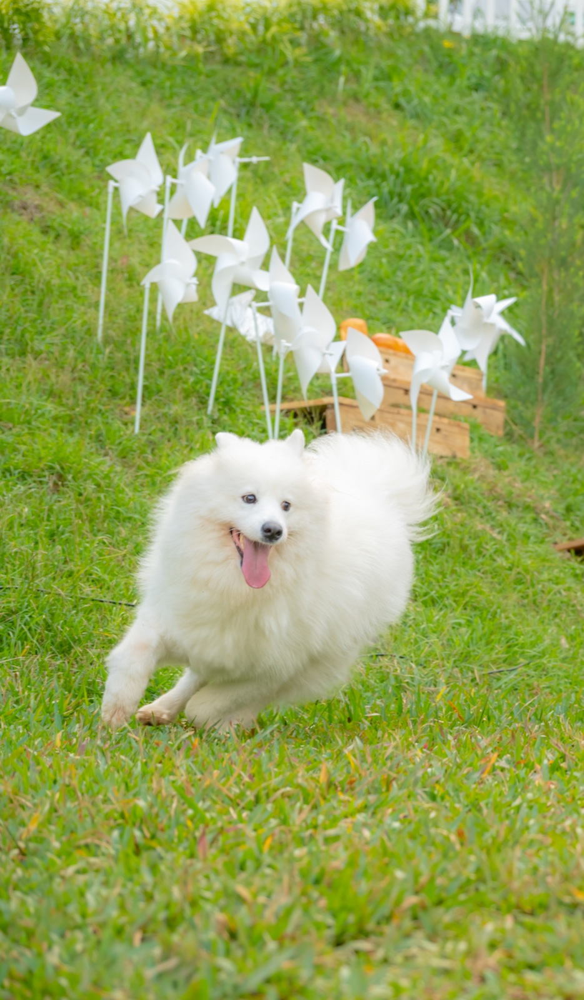
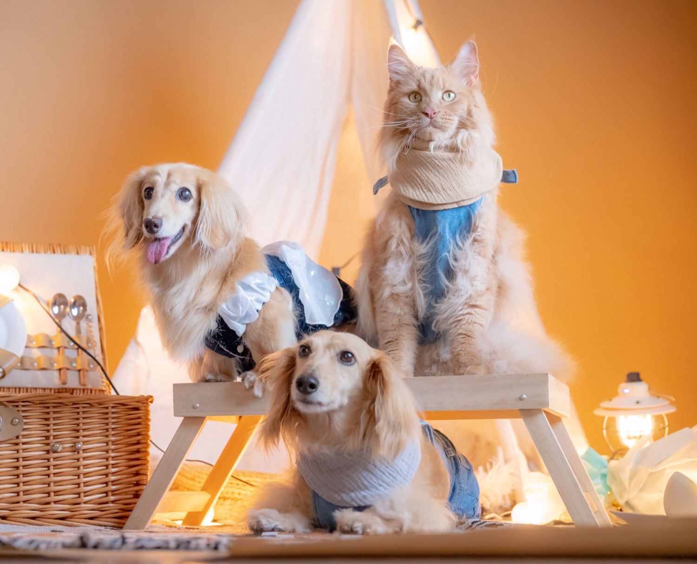

拍攝特色
棚拍／戶外森系
毛孩棚拍或草地互動，依毛孩狀態安排節奏，輕鬆自然。
道具與佈景
提供寵物攝影道具與背景配置，畫面乾淨、耐看。
費用參考
| 方案 | 費用 | 說明 |
|---|---|---|
| 寵物攝影 | NT$3,800 起 | 半小時起；照片檔案全給（含基本調色），至少 50 張以上。 |
| 精修加購 | NT$380 / 張 | 人物／毛孩精修（依需求加購）。 |
| 人數/入鏡 | 每人 NT$800 | 一隻毛孩＋兩位主人或家庭兩大兩小；加人/主人入鏡依此計。 |
照片參考





毛孩棚拍或草地互動，依毛孩狀態安排節奏，輕鬆自然。
提供寵物攝影道具與背景配置，畫面乾淨、耐看。
| 方案 | 費用 | 說明 |
|---|---|---|
| 寵物攝影 | NT$3,800 起 | 半小時起；照片檔案全給（含基本調色），至少 50 張以上。 |
| 精修加購 | NT$380 / 張 | 人物／毛孩精修（依需求加購）。 |
| 人數/入鏡 | 每人 NT$800 | 一隻毛孩＋兩位主人或家庭兩大兩小；加人/主人入鏡依此計。 |

